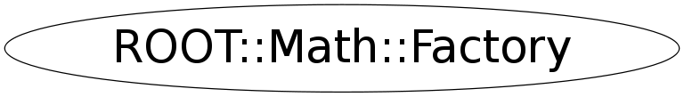

Function Members (Methods)
public:
| ~Factory() | |
| static ROOT::Math::DistSampler* | CreateDistSampler(const string& samplerType = "") |
| static ROOT::Math::Minimizer* | CreateMinimizer(const string& minimizerType = "", const string& algoType = "") |
| ROOT::Math::Factory | Factory() |
| ROOT::Math::Factory | Factory(const ROOT::Math::Factory&) |
| ROOT::Math::Factory& | operator=(const ROOT::Math::Factory&) |
Class Charts
{kind=link}
{kind=link}
{kind=link}
{kind=link}

Function documentation
ROOT::Math::Minimizer * CreateMinimizer(const string& minimizerType = "", const string& algoType = "")
static method to create the corrisponding Minimizer given the string
Supported Minimizers types are:
Minuit (TMinuit), Minuit2, GSLMultiMin, GSLMultiFit, GSLSimAn, Linear, Fumili, Genetic
If no name is given use default values defined in MinimizerOptions
ROOT::Math::DistSampler * CreateDistSampler(const string& samplerType = "")
static method to create the distribution sampler class given a string specifying the type
Supported sampler types are:
Unuran, Foam
If no name is given use default values defined in DistSamplerOptions